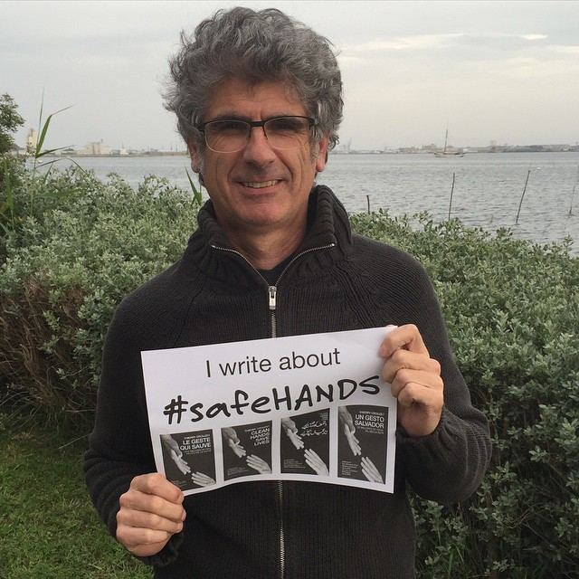
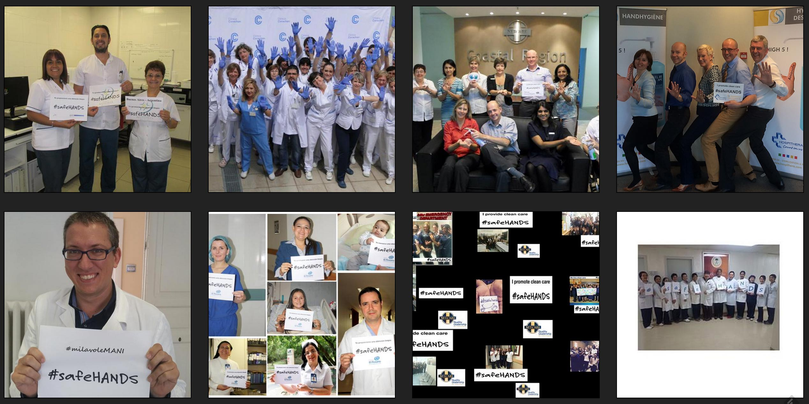

Faites le geste qui sauve
Le 5 mai, c’est la journée mondiale de l’hygiène des mains. Donnez de l’ampleur au mouvement avec un selfie qui affichera le hashtag #safeHANDS.

#safeHANDS crouzet
Pour jouer, il suffit de faire comme moi. Récupérez une affiche sur le site de l’OMS, photographiez-vous, postez l’image partout. Toutes les images se retrouveront sur le site de la fondation CleanHandsSaveLives.
Si vous voulez en savoir plus sur cette fantastique épopée médicale, il est encore temps de lire Le geste qui sauve. Le livre souffle demain son premier anniversaire, avec plus de 40 000 copies distribuées dans une douzaine de langues.

Participez et sensibilisez vos amis.